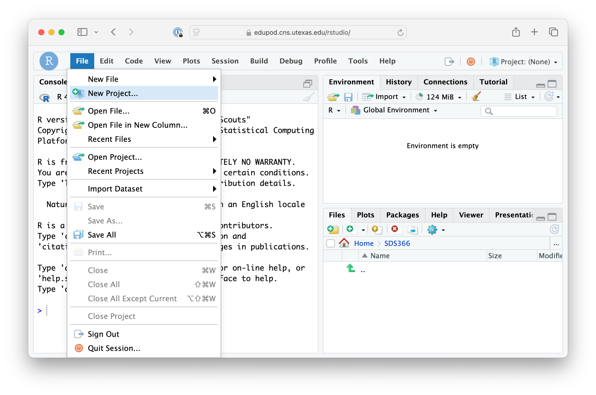
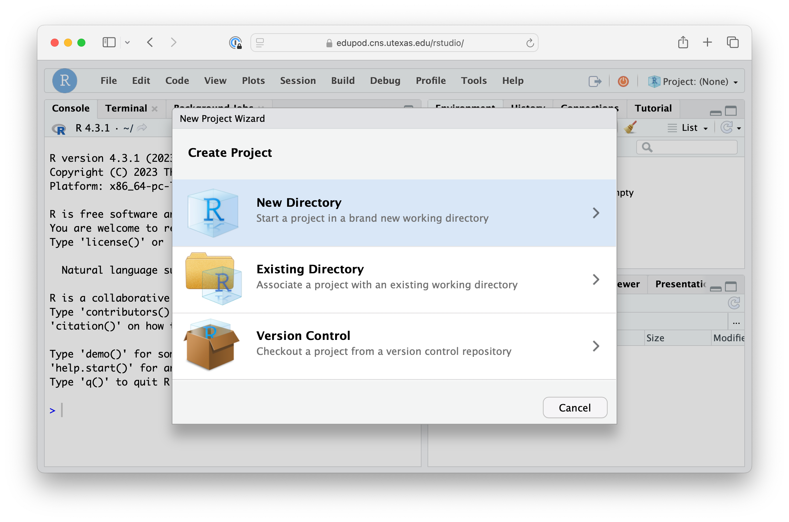
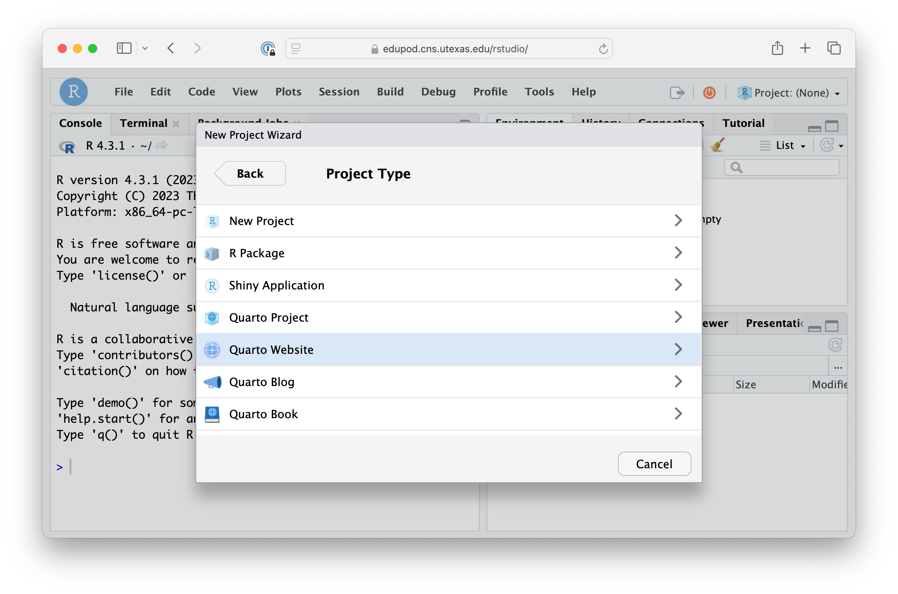
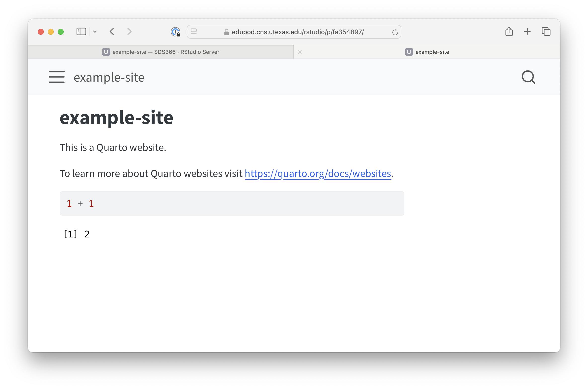
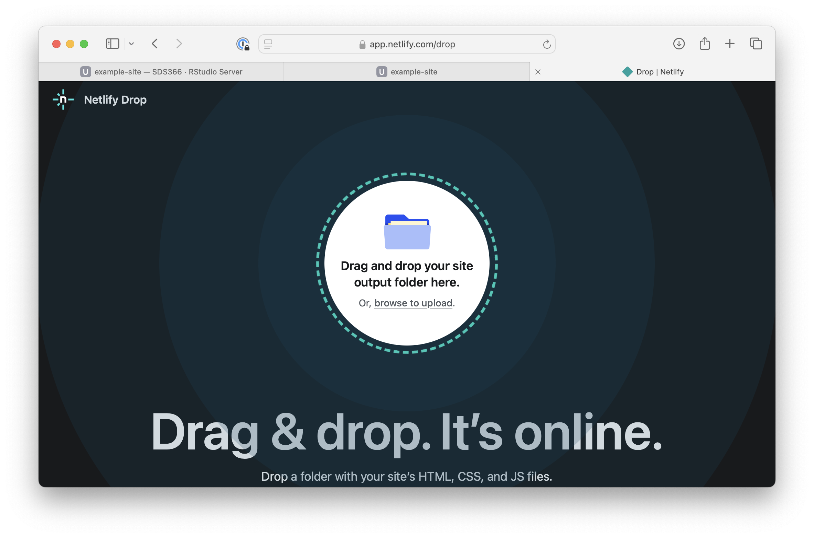
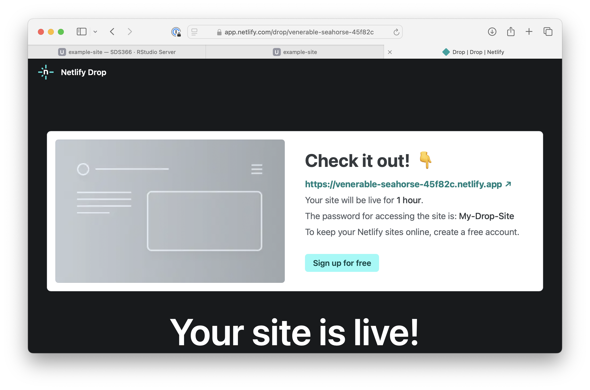

Introduction to web design
2025-05-31
Anatomy of a web site
Web sites consist of three components:
HTML: Content of the site
CSS: Appearance of the site
JavaScript: Interactivity
We won’t be discussing JavaScript here
Block and inline elements
<div>: Contents stacked vertically
<span>: Contents placed inline
Block and inline elements
Rendered output:
<div> elements are stacked vertically from top to bottom
Block and inline elements
Rendered output:
This is an example
<span> elements are placed inline
Elements can be nested
Elements are styled with CSS
Elements are styled with CSS
Elements are styled with CSS
Elements are styled with CSS
HTML input:
Rendered output:
This is an example
Top and bottom padding don’t affect the height of an inline element
Creating complex designs: CSS classes and selectors
Creating complex designs: CSS classes and selectors
Creating complex designs: CSS classes and selectors
Creating complex designs: CSS classes and selectors
HTML input:
Rendered output:
This is red, green, and blue text.
The CSS selector span.red is more specific than .red and therefore takes priority
Try this out for yourself: https://jsfiddle.net/
A few more tags to know
The <img> tag: images
Rendered output:

The <img> tag: images
Rendered output:
The <a> tag: links
HTML input:
Rendered output:
My book on data visualization: Fundamentals of Data Visualization
The <br> tag: line breaks
HTML input:
Rendered output:
My book on data visualization:
Fundamentals of Data Visualization
The <ul> and <li> tags: unordered lists
The <ol> and <li> tags: unordered lists
Making a website with Quarto

Quarto Guide: https://quarto.org/docs/guide





Rendering the site


Publishing the site





Alternatives to Netlify
Any webhosting service
For details and more options, see: https://quarto.org/docs/publishing/
Further reading
- MDN Web Docs: Learn to style HTML using CSS
- w3schools.com: CSS Tutorial
- Quarto: Guide